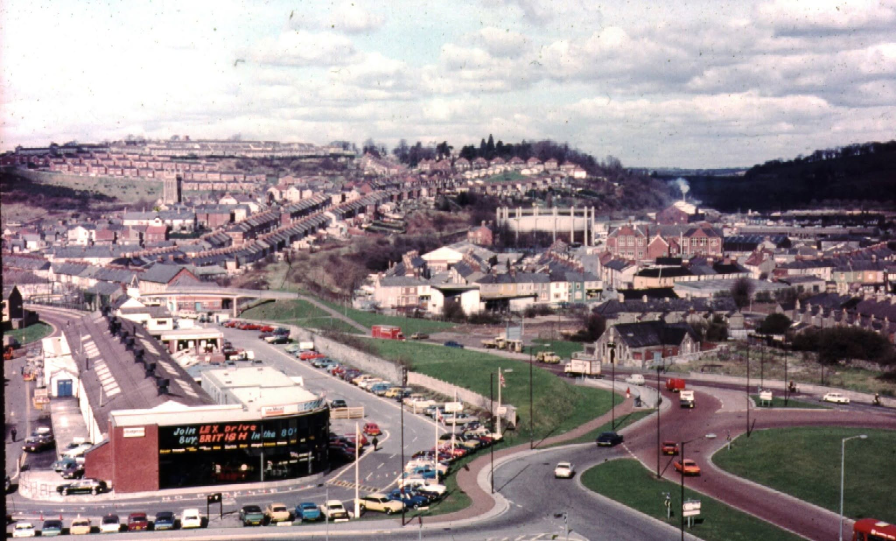
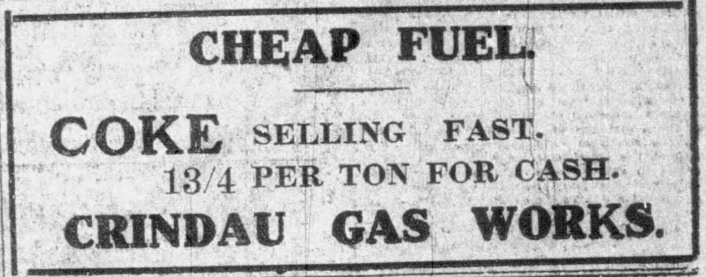
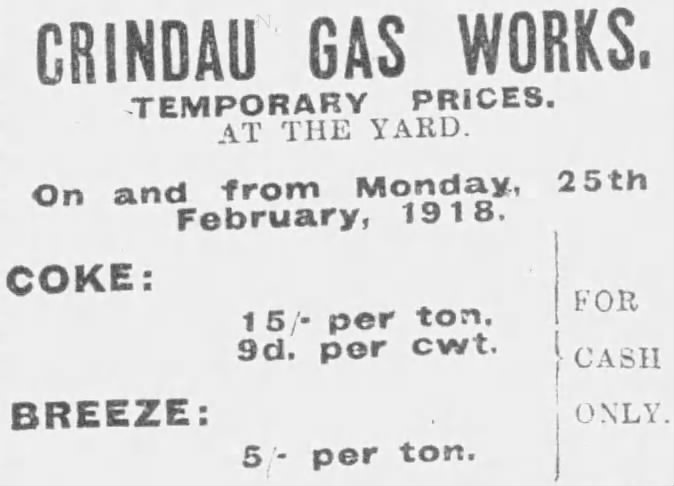
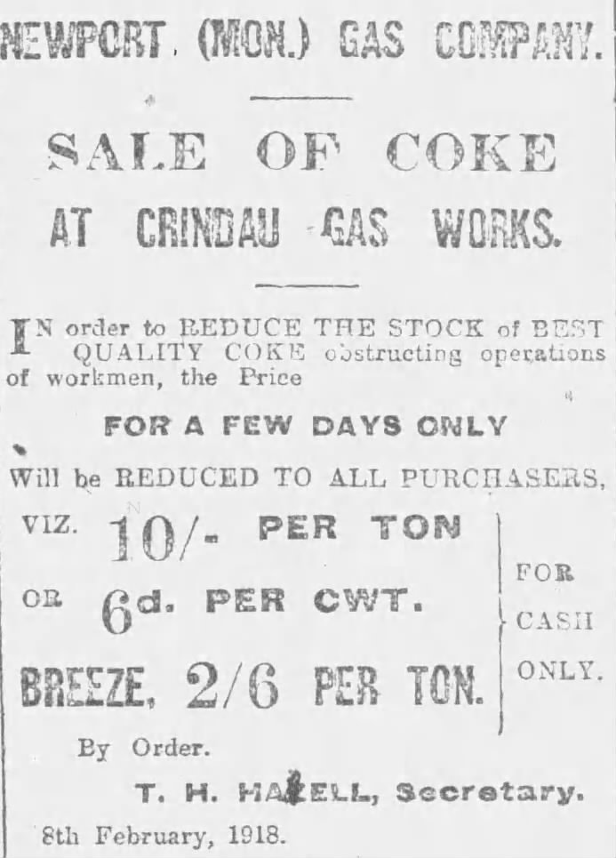
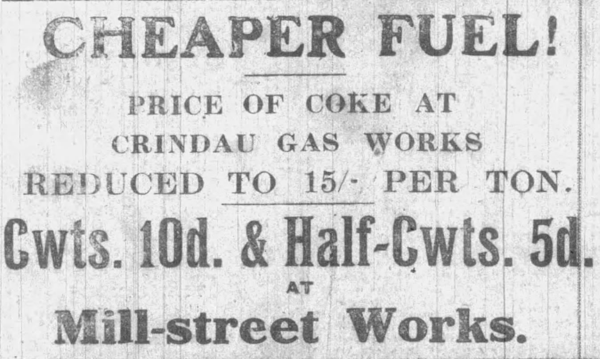
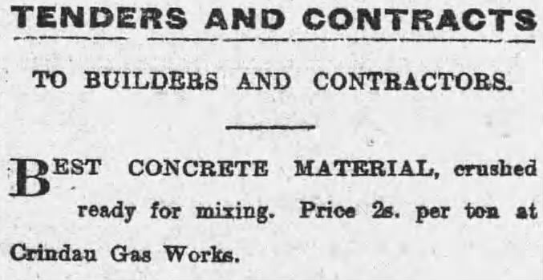

The Expansion Beyond Mill Street
As Newport’s population and industrial footprint surged during the mid-nineteenth century, the town's original gasworks near Mill Street proved inadequate to meet municipal demand. Founded in 1843, the Newport Gas Company sought expansive low-lying land that offered both rail connections and direct tidal water access for coal shipments.
The riverside marshland at Crindau provided the ideal location. Acquired in the early 1880s, the company laid out an extensive carbonisation works at the bottom of Albany Street. Thousands of tons of bituminous coal arrived weekly via Great Western Railway sidings and barges on the River Usk, where it was carbonised at high heat inside batteries of horizontal retort benches.
"Night shifts at Crindau were marked by the glow of coke discharge and the steady ascent of the counter-weighted telescopic gasholders above the riverbank."
1892: The Treble-Lifted Gasholder Excavation
By the autumn of 1892, demand necessitated a substantial expansion of storage capacity at the Crindau site. Under the supervision of company engineer Mr. Canning, work began on cutting a massive underground tank to house a new treble-lifted telescopic gasholder, with civil engineering contractors Messrs. Linton & Co. carrying out the work.
On 10 September 1892, the South Wales Argus reported on an inspection tour conducted by the company’s directors:
"The directors then accompanied Mr. Canning to inspect the new gas-holder tank, now in progress, and for which Mr. Canning is engineer. The directors expressed themselves satisfied with the progress made by Messrs. Linton and Coy who are the contractors for this important work. The holder, when treble lifted, will contain no less a quantity than 1,500,000 cubic feet of gas. We may mention that the largest holder now in South Wales does not exceed 1,000,000 cubic feet. The excavation is in rapid progress, and is very interesting to inspect, as a portion of it lies in solid rock."
Source: South Wales Daily Argus, 10 September 1892 →
With an unprecedented capacity of 1.5 million cubic feet, the structure surpassed any holder then standing in South Wales, demonstrating Crindau's growing regional dominance as a utility hub.
1901: The Hudson's Soap War Balloon Ascent
In May 1901, the open meadows of the works served as the venue for a high-profile public spectacle organised by the manufacturers of Hudson's Soap[cite: 5]. Capitalising on contemporary public interest in the Boer War, the firm toured four promotional gas balloons billed as facsimiles of the military observation balloons deployed by the British Army in South Africa[cite: 4, 5].
Managed by aeronautical engineers Messrs. C. G. Spencer & Sons of London, the balloons required substantial supplies of coal gas for their ascents[cite: 4, 5]. Newport Gas Company’s Crindau facility provided the ideal infrastructure, possessing both direct main pipeline pressure and an adjacent pasture—designated in contemporary announcements as "The Crindau Gas Works Field"[cite: 5].
{kind=link}
Advertisement detailing the South Wales itinerary, designating Newport's ascent to "The Crindau Gas Works Field".
{kind=link}
Ticket issued by aeronauts Messrs. C. G. Spencer & Sons, depicting the spherical coal-gas observation envelope.
On 7 May 1901, the South Wales Daily Argus announced the four-town regional flight schedule:
"Four of Hudson's Soap War Balloons are shortly to be in this district, and will make ascents from—
Source: South Wales Daily Argus, 7 May 1901, p. 4
CARDIFF (No. 1 Balloon), Athletic Grounds, Roath.
NEWPORT (No. 2 Balloon), The Crindau Gas Works Field.
PONTYPRIDD (No. 3 Balloon), The Maltsters' Field.
SWANSEA (No. 4 Balloon), Vetch Field."[cite: 5]
Passengers who secured tickets were treated to tethered ascents high above Crindau, offering unprecedented panoramas across the River Usk, the docks, and the expanding industrial terraces of Newport.
Chemical By-Products & Daily Labour
The Crindau plant was an intricate chemical complex rather than just a gas holder site. In addition to Town Gas piped into city mains, carbonisation yielded coal tar, ammonia liquor, and industrial coke. Specialist by-product plants distilled ammoniacal fertiliser and road-tar binders, which were piped straight into tank wagons on site.
The work was physically punishing and hazardous. Retort stokers, boilermen, valvemen, and coalheavers worked in intense heat and coal dust. The street directories for Albany Street, Lyne Street, and Cyril Street reflect this workforce, listing dozens of gas stokers and meter repairers living in the neighbouring terraces within earshot of the steam exhaust.
Nationalisation and Post-War Clearance
In 1949, under the Gas Act 1948, private ownership concluded when the undertaking was nationalised into the Wales Gas Board. The works continued municipal town gas synthesis until the national rollout of North Sea natural gas in the late 1960s rendered coal-gas retort houses obsolete.
The landmark telescopic gasholders and towering retort chimneys were decommissioned and cleared during the late twentieth century. Today, part of the historic acreage serves utility and electrical distribution needs, while modern flood alleviation schemes protect the former coal yards along the river frontage.
Documentary & Photographic Evidence
Visual records and newspaper clippings documenting the history of the Crindau Gas Works.





